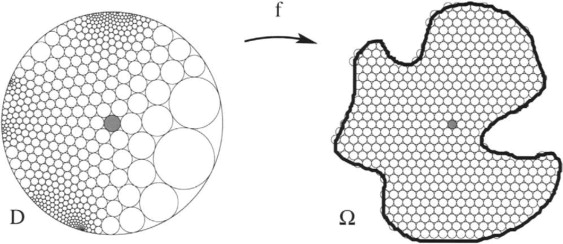

A disciplina tem por objetivo o estudo rigoroso de tópicos básicos de análise complexa (tais quais funções holomorfas, a teoria de Cauchy e suas consequências, funções harmônicas, o teorema dos resíduos, funções meromorfas, aplicações conformes e o teorema da aplicação de Riemann) bem como alguns tópicos adicionais avançados (tais quais os teoremas de Montel e Picard, o princípio de Phragmén-Lindelöf, o teorema dos três círculos de Hadamard, funções univalentes).
O curso também oferece uma base sólida para o estudo de temas de pesquisa em análise harmônica ou algumas áreas de sistemas dinâmicos, dentre outros.

Pré-requisitos
Análise complexa elementar. Biblliografia: Suzete Afonso e Marcos da Silva, Teoria básica de análise complexa, editora UNESP.
Análise no espaço euclidiano. Bibliografia: Elon Lages Lima, Curso de análise Vol 1 e 2, editora IMPA.
Álgebra linear. Bibliografia: Elon Lages Lima, Álgebra linear, editora IMPA.
Professor
Nome: Silvius Klein
Sala: L749
Email: silviusk [arroba] impa [ponto] br
Aulas
Hora: segundas e quartas das 15 às 17
Local: L856
Horário de atendimento
Hora: segundas e quartas das 17h00 às 17h30
Local: L749 ou sala de aula
Bibliografia
[Gamelin] Theodore W. Gamelin, Complex Analysis, Springer, Undergraduate Texts in Mathematics.
[Stein] Elias M. Stein & Rami Shakarchi, Complex Analysis, Princeton Lectures in Analysis, vol II, Princeton University Press.
Outros livros importantes de análise complexa
Lars Ahlfors, Complex analysis: an introduction to the theory of analytic functions of one complex variable, McGraw-Hill.
John B. Conway, Functions of one complex variable, Springer.
Walter Rudin, Real and complex analysis, McGraw-Hill.
E. C. Titchmarsh, The theory of functions, Oxford University Press.
Robert E. Greene & Steven G. Krantz, Function Theory of One Complex Variable, American Mathematical Society.
Wilhelm Schlag, A Course in Complex Analysis and Riemann Surfaces, American Mathematical Society.
Barry Simon, Basic Complex Analysis, American Mathematical Society.
Avaliação
Listas de exercícios para entregar durante o semestre.
Dois exames escritos (um no meio do semestre e o outro no final). Datas: 17 de outubro e 9 de dezembro.
Cálculo da nota final: 30% listas de exercícios, 35% cada exame.
Ementa do curso - tópicos fundamentais
- Funções holomorfas. Equações de Cauchy-Riemann.
- Algumas funções complexas elementares.
- Séries de funções. Séries de potências. Funções analíticas.
- Integrais de linha complexas. Índice de uma curva.
- O teorema local de Cauchy (para domínios estrelados), a fórmula integral de Cauchy para domínios estrelados.
- Consequências fundamentais da teoria de Cauchy: holomorfia implica analiticidade, as desigualdades de Cauchy, o teorema de Liouville, o teorema fundamental da Álgebra, o teorema de Morera-Pompeiu, o teorema de Weierstrass.
- Zeros de uma função holomorfa. Continuação analítica. O princípio da simetria de Schwarz.
- O princípio do módulo máximo. O teorema da função inversa e o teorema da função aberta. Ramos holomorfos do logaritmo complexo.
- Classificação das singularidades isoladas. O teorema de Casorati-Weierstrass.
- O teorema dos resíduos: definições e resultados gerais (séries de Laurent, teorema do tipo Cauchy e fórmula do tipo Cauchy para funções holomorfas em um anel; classificação das singularidades, o teorema dos resíduos).
- O teorema dos resíduos: aplicações no cálculo de vários tipos de integrais.
- Funções meromorfas. O princípio do argumento. O teorema de Rouché. Outros resultados relacionados.
- O teorema de Cauchy (versão global homologica).
- O lema de Schwarz, geometría hiperbólica.
- Transformações conformes: definição, famílias normais, o teorema de Montel, o teorema da aplicação de Riemann.
- Transformações conformes: exemplos e métodos.
Ementa do curso - possíveis tópicos adicionais
- Famílias compactas de funções holomorfas e meromorfas. Os teoremas de Montel e Picard.
- O princípio (do módulo máximo) de Phragmén-Lindelöf.
- Outras consequências do princípio do módulo máximo: o teorema de Vitali, o teorema de Montel, o teorema dos três círculos de Hadamard, o teorema de Borel-Carathéodory.
- Funções harmônicas e subharmônicas.
- Funções e polinômios univalentes. O teorema ¼ de Koebe, a desigualdade e a conjetura de Bieberbach, estimativa de área de Gronwall.
- Funções meromorfas em \(\mathbb{C}\) e o teorema de Mittag-Leffler.
- Funções inteiras. Produtos infinitos. Produtos canônicos de Weierstrass.
- Algumas funções especiais na teoria análitica dos números.